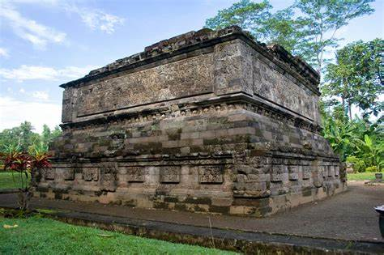
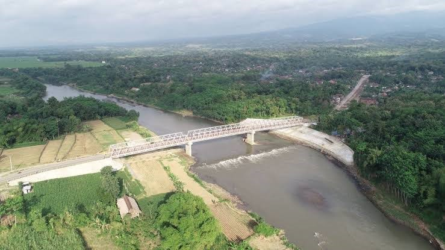

Sejarah

Nama Kediri ada yang berpendapat berasal dari kata "KEDI" yang artinya "MANDUL" atau "Wanita yang tidak berdatang bulan". Menurut kamus Jawa Kuno Wojo Wasito, 'KEDI" berarti Orang Kebiri Bidan atau Dukun. Di dalam lakon Wayang,
Sang Arjuno pernah menyamar Guru Tari di Negara Wirata, bernama "KEDI WRAKANTOLO". Bila kita hubungkan dengan nama tokoh Dewi Kilisuci yang bertapa di Gua Selomangleng, "KEDI" berarti Suci atau Wadad.
Disamping itu kata Kediri berasal dari kata "DIRI" yang berarti Adeg, Angdhiri, menghadiri atau menjadi Raja (bahasa Jawa Jumenengan). Untuk itu dapat kita baca pada prasasti "WANUA" tahun 830 saka, yang diantaranya berbunyi : "
Ing Saka 706 cetra nasa danami sakla pa ka sa wara, angdhiri rake panaraban", artinya : pada tahun saka 706 atau 734 Masehi, bertahta Raja Pake Panaraban. Nama Kediri banyak terdapat pada kesusatraan Kuno yang berbahasa Jawa
Kuno seperti : Kitab Samaradana, Pararaton, Negara Kertagama dan Kitab Calon Arang. Demikian pula pada beberapa prasasti yang menyebutkan nama Kediri seperti : Prasasti Ceber, berangka tahun 1109 saka yang terletak di Desa
Ceker, sekarang Desa Sukoanyar Kecamatan Mojo.
Dalam prasasti ini menyebutkan, karena penduduk Ceker berjasa kepada Raja, maka mereka memperoleh hadiah, "Tanah Perdikan". Dalam prasasti itu tertulis "Sri Maharaja Masuk Ri Siminaninaring Bhuwi Kadiri" artinya raja telah
kembali kesimanya, atau harapannya di Bhumi Kadiri. Prasasti Kamulan di Desa Kamulan Kabupaten Trenggalek yang berangkat tahun 1116 saka, tepatnya menurut Damais tanggal 31 Agustus 1194.Pada prasasti itu juga menyebutkan nama,
Kediri, yang diserang oleh raja dari kerajaan sebelah timur. "Aka ni satru wadwa kala sangke purnowo", sehingga raja meninggalkan istananya di Katangkatang ("tatkala nin kentar sangke kadetwan ring katang-katang deni nkir malr
yatik kaprabon sri maharaja siniwi ring bhumi kadiri"). Menurut bapak MM. Sukarto Kartoatmojo menyebutkan bahwa "hari jadi Kediri" muncul pertama kalinya bersumber dari tiga buah prasasti Harinjing A-B-C, namun pendapat beliau,
nama Kadiri yang paling tepat dimuculkan pada ketiga prasasti.
Alasannya Prasti Harinjing A tanggal 25 Maret 804 masehi, dinilai usianya lebih tua dari pada kedua prasasti B dan C, yakni tanggal 19 September 921 dan tanggal 7 Juni 1015 Masehi.Dilihat dari ketiga tanggal tersebut menyebutkan
nama Kediri ditetapkan tanggal 25 Maret 804 M. Tatkala Bagawantabhari memperoleh anugerah tanah perdikan dari Raja Rake Layang Dyah Tulodong yang tertulis di ketiga prasasti Harinjing.Nama Kediri semula kecil lalu berkembang
menjadi nama Kerajaan Panjalu yang besar dan sejarahnya terkenal hingga sekarang.Selanjutnya ditetapkan surat Keputusan Bupati Kepada Derah Tingkat II Kediri tanggal 22 Januari 1985 nomor 82 tahun 1985 tentang hari jadi Kediri,
yang pasal 1 berbunyi " Tanggal 25 Maret 804 Masehi ditetapkan menjadi Hari Jadi Kediri.
Geografi

Berdasarkan posisi geografisnya, Kota Kediri dikelilingi oleh wilayah Kabupaten Kediri dan terletak di sebelah selatan garis katulistiwa, berada diantara 111,05 derajat-112,03 derajat Bujur Timur dan 7,45 derajat-7,55 derajat
Lintang Selatan.
Kota Kediri dilalui oleh Sungai Brantas yang mengalir dari selatan ke utara sepanjang 7 Km dan membagi wilayah Kota Kediri menjadi wilayah barat dan timur. Wilayah barat sungai menjadi wilayah Kecamatan Mojoroto, sedangkan timur
sungai terdiri dari Kecamatan Kota dan Kecamatan Pesantren.
Wisata
Berikut adalah tempat wisata yang paling populer di kota kediri.
Simpang Lima Gumul

Monumen Simpang Lima Gumul atau yang biasa disebut dengan Simpang Gumu. Monumen ini merupakan salah satu wisata yang paling popular di Kediri. Bahkan, monumen ini bisa dibilang sudah menjadi ikon Kota Kediri. Tampilannya yang
menyerupai monumen L'Arc De Triomphe di Paris ini berhasil memikat para wisatawan untuk melihat sendiri replika monumen yang ada di Prancis.
Menariknya, monumen ini konon dibangun untuk mengingatkan kembali tentang kejayaan Kediri di masa lampau. Monumen ini memiliki luas bangunan 804m², ditumpu 3 tangga sepanjang 3 meter dari dasar pura, dan dengan tinggi 25
meter. Jika kamu berada di atap monumen, kamu dapat menyaksikan keseluruhan panorama Kota Kediri. Struktur monumen dihiasi patung dan relief yang menceritakan sejarah, kesenian dan kebudayaan Kediri.
Kampung Inggris

Di Kediri, tepatnya di sekitar Desa Pelem, Kecamatan Pare, terdapat suatu perkampungan yang dijuluki sebagai Kampung Inggris. Kampung Inggris merupakan tempat terkenal di Kediri yang dikunjungi berbagai masyarakat dari seluruh
daerah untuk belajar Bahasa Inggris. Kampung Pare terkenal sangat unik karena warga lokal maupun penduduk luar kota yang tinggal di sana selalu menggunakan Bahasa Inggris dalam percakapan sehari – hari.
Objek wisata Kediri ini juga memiliki fasilitas penunjang yang lengkap jika dibandingkan dengan tempat rekreasi lainnya, sebab Kampung Inggris memang digunakan sebagai tempat untuk mengasah kemampuan bahasamu.
Jika kamu mau berkunjung ke Kampung Inggris, kamu dapat melalui Jl. Raya Kediri – Pare yang merupakan rute atau jalur tercepat untuk menuju lokasi Kampung Inggris, atau kamu juga dapat melalui Jl. Totok Kerot dan RA Kartini
sebagai jalur alternatif. Bagi kamu yang ingin menguji kemampuan Bahasa Inggris kamu, maka berkunjunglah ke Kampung Inggris Pare.
Goa Selomangleng

Keindahan batuan kuno dari tempat menarik Kediri satu ini akan menghipnotis siapa saja yang mengunjunginya. Pesona batuan purbanya menyuguhkan spot instagenic untuk sebagian orang yang hobi fotografi. Dapatkan gambar
instagenic dengan jelajah sudut anti mainstream dari wisata alam Goa Selomangleng Kediri. Lokasi dari tempat piknik murah satu ini beralamat di Pojok, Kec. Mojoroto, Kota Kediri, Jawa Timur. Nikmati liburan seru di Kabupaten
Kediri dengan jelajah destinasi wisata murah dan terbarunya satu ini.